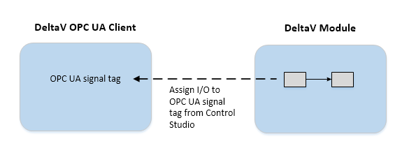

DeltaV OPC UA clients
DeltaV OPC clients contain the following subsystems:
- OPC UA Physical Devices (PDTs): establish the communication link to a single OPC UA server through the server’s endpoint URL. The physical device stores the configuration information for a connection to an OPC UA server. Each physical device is typically configured to communicate with one server. In redundant network configurations, you can configure a secondary UA server as well.
- OPC UA Logical Devices: group related signals using common settings and define the interval at which the client gets data from the server.
- OPC UA Signals: map the client to an OPC UA variable node in the server address space. To use the server data in the DeltaV system, you need to assign function block parameters to the OPC UA signals. OPC UA signals include a signal tag. You assign a block parameter to an OPC UA signal tag using the command in Control Studio.

EIOC OPC UA client signal tags can only be assigned to function block and module parameters assigned to that EIOC. These parameters can also be referenced by other controllers or workstations. You can also use the signal through external and internal references or blocks that support expressions (for example, the CALC and Action blocks).
Workstation OPC UA client signal tags can only be assigned to function block and module parameters assigned to that workstation. These parameters can also be referenced by other controllers or workstations.
Note: Performing a partial download on any of the following items
disconnects and reconnects the session even if no changes have been made:
- OPC UA physical device (PDT)
- EIOC port using the OPC UA protocol
- Workstation OPC UA Client subsystem